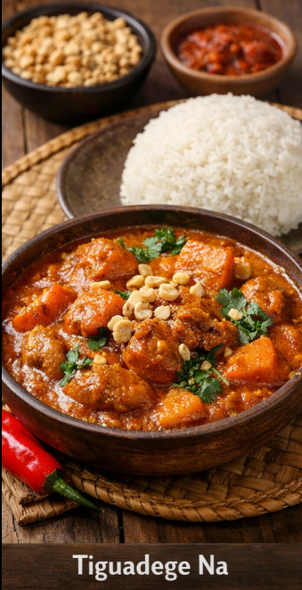
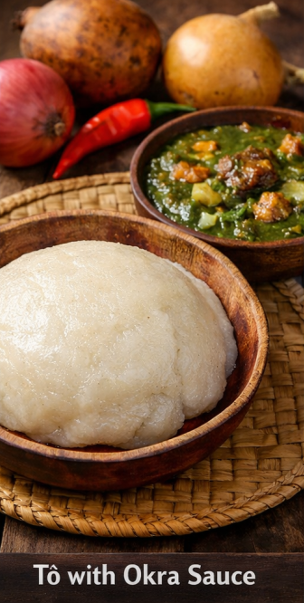
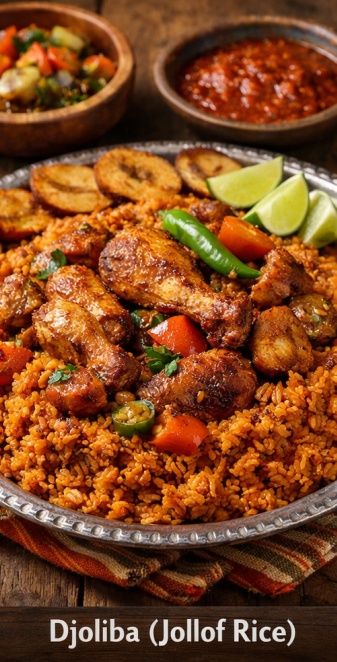

Accueil
Menu
Service
Contact
Nos Menu & Services
Tiguadèguè

Ingrédients
Ingrédients principaux
Pâte d’arachide (beurre de cacahuète naturel)
Viande (bœuf, mouton ou poulet)
Tomates fraîches ou concentré de tomate
Oignons
Ail
Huile végétale
Sel
Poivre
Bouillon (eau + cube ou bouillon naturel)
Épices et condiments
Piment (selon le goût)
Soumbala (nététou)
Feuille de laurier
Gingembre (optionnel)
Optionnels
Gombo
Aubergine africaine
Patate douce
Carottes
Chou
Poisson fumé ou séché
Tô

Ingrédients
Farine de mil, de sorgho ou de maïs
Eau
Sel (optionnel)
Pour la sauce gombo (Okra Sauce)
Gombo frais (okra)
Tomates fraîches ou concentré de tomate
Oignons
Piment (selon le goût)
Ail
Huile végétale ou huile de palme
Sel
Poivre
Bouillon (eau + cube ou bouillon naturel)
Optionnels
Viande (bœuf, mouton)
Poisson frais ou fumé/séché
Crevettes séchées
Soumbala (nététou)
Feuilles de laurier ou épices locales
Djoliba

Ingrédients
Riz (riz long ou riz étuvé)
Tomates fraîches ou concentré de tomate
Oignons
Poivron (rouge de préférence)
Piment (selon le goût)
Ail
Huile végétale
Bouillon (eau + cube ou viande/volaille)
Sel
Poivre
Feuille de laurier (optionnel)
Thym (optionnel)
Optionnels
Viande (bœuf, mouton), poulet ou poisson
Carottes
Haricots verts
Petits pois